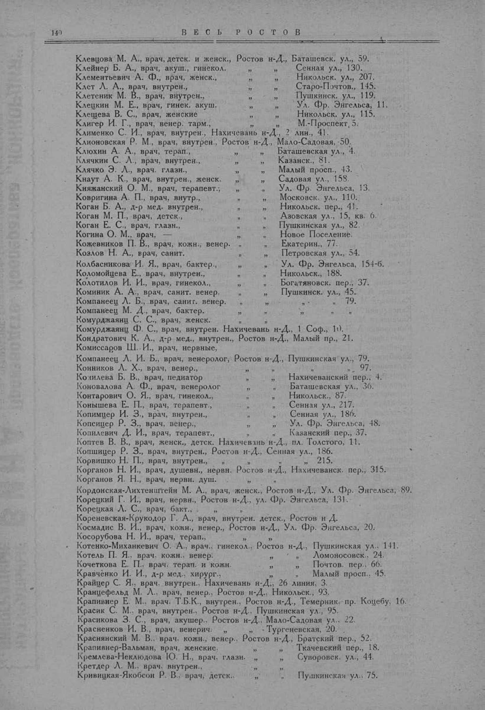

Лист источника 190
Скан

Распознанный текст
140 В Е С Ь Р О С Т О В
Клевцова М. А., врач, детск. и женск., Ростов н-Д., Баташевск. ул., 59.
Клейнер Б. А., врач, акуш., гинекол. " " Сенная ул., 130.
Клементьевич А. Ф., врач, женск., " " Никольск. ул., 207.
Клет Л. А., врач, внутрен., " " Старо-Почтов., 145.
Клетеник М. В., врач, внутрен., " " Пушкинск. ул., 119.
Клецкин М. Е., врач, гинек. акуш. " " Ул. Фр. Энгельса, 11.
Клещева В. С., врач, женские " " Никольск. ул., 115.
Клигер И. Г., врач, венер. тарм., " " М.-Проспект, 5.
Клименко С. И., врач, внутрен., Нахичевань н-Д., 2 лин., 41.
Клионовская Р. М., врач, внутрен., Ростов н-Д., Мало-Садовая, 50.
Клюхин А. А., врач, терап., " " Баташевская ул., 4.
Клячкин С. Л., врач, внутрен., " " Казанск., 81.
Клячко Э. Л., врач. глазн., " " Малый просп., 43.
Кнаут А. К., врач, внутрен., женск. " " Садовая ул., 158.
Княжанский О. М., врач, терапевт.; " " Ул. Фр. Энгельса, 13.
Ковригина А. П., врач, внутр., " " Московск. ул., 110.
Коган Б. А., д-р мед. внутрен., " " Никольск. пер., 41.
Коган М. П., врач, детск., " " Азовская ул., 15, кв. 6.
Коган Е. С., врач, глазн., " " Пушкинская ул., 82.
Когина О. М., врач, " " Новое Поселение.
Кожевников П. В., врач, кожн., венер. " " Екатерин., 77.
Козлов Н. А., врач, санит. " " Петровская ул., 54.
Колбасникова И. Я., врач, бактер., " " Ул. Фр. Энгельса, 154-б.
Коломойцева Е., врач, внутрен., " " Никольск., 188.
Колотилов И. И., врач, гинекол., " " Богатяновск. пер., 37.
Коминик А. А., врач, санит. венер. " " Пушкинск. ул., 45.
Компанеец Л. Б., врач, санит. венер. " " " " 79.
Компанеец М. Д., врач, бактер. " " " " "
Комурджаянц С. С., врач, женск.
Комурджаянц Ф. С., врач, внутрен. Нахичевань н-Д., 1 Соф., 10.
Кондратович К. А., д-р мед., внутрен., Ростов н-Д., Малый пр., 21.
Комиссаров Ш. И., врач, нервные,
Компанеец Л. И. Б., врач, венеролог, Ростов н-Д., Пушкинская ул., 79.
Конников Л. Х., врач, венер., " " " " 97.
Козилева Б. В., врач, педиатор " " Нахичеванский пер., 4.
Коновалова А. Ф., врач, венеролог " " Баташевская ул., 36.
Контарович О. Я., врач, гинекол., " " Никольск., 87.
Конышева Е. П., врач, терапевт., " " Сенная ул., 217.
Копимцер И. З., врач, внутрен., " " Сенная ул., 186.
Копсицер Р. З., врач, венер., " " Ул. Фр. Энгельса, 48.
Копилевич Д. И., врач, терапевт., " " Казанский пер., 37.
Коптев В. В., врач, женск., детск. Нахичевань н-Д., пл. Толстого, 11.
Копшицер Р. З., врач, внутрен., Ростов н-Д., Сенная ул., 186.
Корвишко Н. П., врач, внутрен., " " " 215.
Корганов Н. И., врач, душевн., нервн. Ростов н-Д., Нахичеванск. пер., 315.
Корганов Я. Н., врач, нервн. душ.
Кордонская-Лихтенштейн М. А., врач, женск., Ростов н-Д., Ул. Фр. Энгельса, 89.
Корецкий Г. И., врач, нервн., Ростов н-Д., ул. Фр. Энгельса, 131.
Корецкая Л. С., врач, бакт., "
Кореневская-Крукодор Г. А., врач, внутрен. детск., Ростов н Д.
Космадис В. И., врач, кожн., венер., Ростов н-Д., Ул. Фр. Энгельса, 20.
Косорубова Н. И., врач, терап., " "
Котенко-Миханкевич О. А., врач., гинекол., Ростов н-Д., Пушкинская ул., 141.
Котель П. Я., врач. кожн., венер. " " Ломоносовск., 24.
Кочеткова Е. П., врач. терап. и кожн. " " Почтов. пер., 66.
Кравченко И. И., д-р мед., хирург., " " Малый просп., 45.
Крайцер С. Я., врач, внутрен., Нахичевань н-Д., 26 линия, 3.
Кранцефельд М. Л., врач, венер., Ростов н-Д., Никольск., 93.
Крапивнер Е. М., врач, Т.Б.К., внутрен., Ростов н-Д., Темерник. пр. Коцебу, 16.
Красик С. М., врач, внутрен., Ростов н-Д., Пушкинская ул., 95.
Красикова З. С., врач, акушер., Ростов н-Д., Мало-Садовая ул., 22.
Красненков И. В., врач, венерич. " " Тургеневская, 20.
Краснянский М. В., врач. кожн., венер., Ростов н-Д., Братский пер., 52.
Крапивнер-Вальман, врач, женские, " " Ткачевский пер., 18.
Кремлева-Неклюдова Ю. Н., врач, глазн. " " Суворовск. ул., 44.
Кретдер Л. М., врач, внутрен., " "
Кривицкая-Якобсон Р. В., врач, детск., " " Пушкинская ул., 75.